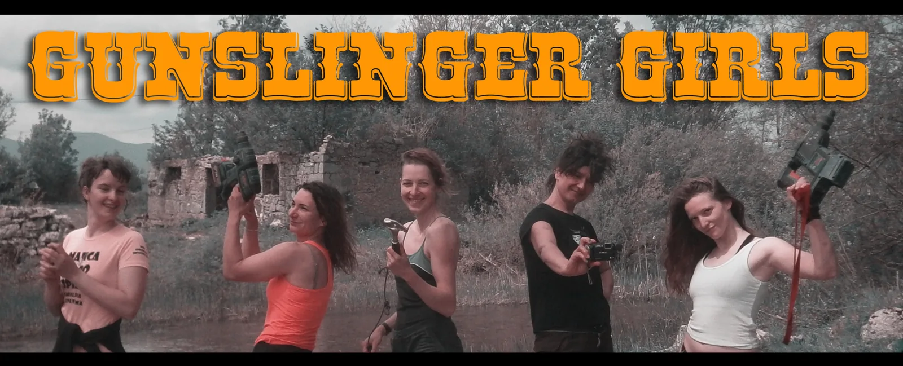

Prvo pa Kita.
Ne pijem, ne pušim, ne psujem. Jedan jedini, porok si mi ti. Što me Kito iz svog srca tjeraš van, kad ja ne bih još ako ne moram

Ana, Tea, Marina, Stipe, Pava i ja. Ženski pohod na Velebit. Doduše u najavi je bilo 5 žena, ali i Stipe nam se ipak pridružila u zadnji tren.
Odma nakon školice pa Kita? Bit će van teško, ali bit će vam i super, ali teško. Umrit ćete, kažu mi u društvu. I prije nego se snađoh evo nas u petak navečer pred Kitom. Svak po jednu transportnu, nosi se hrana, bušilice, pribori za crtanje, kod mene baterije za bušku. Nije lako, ali ajde, računam ispraznit će se baterije pa će biti lakše pri izlazu. I idemo! Sve se odvilo tako brzo, oko 3 sata do bivka se putovalo po užetu kroz neke lude vertikale, kroz Grlić, pa opet vertikale. Otvorila mi se usput i Vrata percepcije dok dođošmo do bivka.
Bivak 1- Pod Grlićem
Ana je već napravila čaj i toplu cedevitu (mljac) dok smo se Tea i ja spustile. Prate nas Pava i Marina, a Stipe se već odavno udomaćio. Čudimo se mi novi tako ovom modernom lounge bivku koji ima odijeljen šank, kuhinju, spavaću sobu, mjesto za opremu, mjesto za odmor, wc, moderne sjedalice od pivskih boca. Čisti luksuz. A sad ajmo leć sutra ćemo rano na Truli pa radne akcije.
Bivak Truli
Energija na 100. Priko Mt Everesta i Divljeg zapada pa još malo ravno i evo nas na Trulom već oko 11. Nismo nimalo truli, spremni smo za akcije da odma iza ručka istraživamo neke upitnike u S Nježniku. Marina i Stipe u Auspuh, Pava i Tea crtaju, a dvi Ane u neku novu vertikalu. Ej, pa ovo ide dalje kaže Ana. To se često kaže tamo, čujem. Ništa čudno za Kitu valjda, ali fantastičan osjećaj spustiti se negdi di još nitko nije prije.
Na kraju dana, tj. mraka bez kraja, hrana bolja nego u stvarnom svijetu, a tek masaže prije spavanja- to se čekalo, jer kad te masira 10 ruku odjednom, sve boljke nestaju.
Novo jutro u mraku, ajmo opet radit. Sad svi dolaze k nama u nove vertikale prozvane ni manje ni više nego Neudate žene... Ali to nije sve! Neudate žene imaju odjeljak koji penje nazvan Rastavljene žene. Vrime brzo prolazi, Pava crta sve u 15 (metara), Marina penje, Ani i Tei ponestaje užeta. Ima tih neudatih žena, više od 70 novih metara. Šibenčani su isto bili u Kiti ovaj vikend, a di drugo nego u Šibenskom kanalu, skupljali metre, pa načuh da bi se moglo prijeći 35 km Kite Gaćešine. Ajmo u bivak! Gotovi smo, nestalo nan je i opreme, nemamo šta, sutra ćemo prema izlazu. Nezaobilazna desetoručna masaža prije spavanja, družimo se. Baš nan je lipo, prava smo ekipa.
Pozdrav Trulom bivku, 4. dan krećemo prema izlazu.
Ana i ja krećemo prve prema izlazu, za nama Pava i Stipe. Marina i Tea će krenuti 2 sata iza nas. Tempo je dobar, ali teško je. Ana ispred mene juri, a ja... ja se trudim. U 11 smo krenili, u 5 popodne smo bili vanka. Uspili smo! "Vidi, zelena boja!" viče Stipe sa zadnjeg sidrišta.
Ostat ćemo još jednu noć na Velebitu. Zapalili smo vatricu. Tea i Ana su vodile nekakvu priču pa su se Marini ukazivali jednorozi i velike šarene kocke, a za Stipom su galopirale kobile. Ne pitajte. Šetnja Velebitom za 1. maj, ne može bolje. Đir do Tatekovog skloništa na Crnopcu, u Zvonimir na pivu pa pranje opreme na suncu i uživancija! Može!
Najluđih 5 dana ikad! S neudatim ženama bi uvik u Kitu! Ko zna, mozda idući put nađemo kanal udatih. Epilog: Šibenska ekipa koju su činili Aida i Teo Barišić te Jure Šarić uz ekipu velebitašica (I Stipe je imao sreću da na par dana bude cura), natukli su 464 metra novih kanala te je najdulji jamski sustav u Hrvata postao još dulji i prešao 35 kilometara - točnije 35.104 metra!
[gallery ids="1905,1908,1906,1907,1910,1912,1917,1916,1913,1909,1915,1914,1911,1918,1919,1920" type="rectangular"]